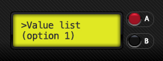
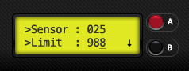

Photoduino has a LCD display and two buttons named as “BUTTON-A” and “BUTTON-B” for all user interaction. Because the LCD has only 16 characters and two lines, the first line will always indicate in which section of the navigation tree we are in, and the second line will show the current setting in which we are or which values we are setting.
Basic rule of buttons

The basic rule of operation to navigate:
- Click BUTTON-A is equivalent to increase or go up
- Hold BUTTON-A is always a way out of the current option
- Click BUTTON-B is equivalent to decrease or go down
- Hold BUTTON-B enter into an option.
The operation of the buttons in each one of the values types is similar to the basic rule, but are detailed below.
Changing a logical/boolean value

Logical/boolean values are values that can be YES or NO. When we’re over an option like this, we can change its value as well:
- Hold BUTTON-B for change value (if the current value is YES will change to NO and vice versa)
Changing a numeric value

Numeric values may be values between 0 and 59999, so that the display will see a blinking cursor on the position that we are changing. To modify its value to make it so:
- If you press the BUTTON-A increases by 1 the value of the cursor position
- If you press the BUTTON-B decreases by 1 the value of the cursor position
- If you hold down BUTTON-A will go to the previous menu by saving the value
- If you hold down BUTTON-B will advance the cursor position
Changing list values

List values are values selected from a predefined list of options. When we are changing a list value will do so:
- If you press the BUTTON-A will goes up in the options list
- If you press the BUTTON-B will goes down in the options list
- If you hold down BUTTON-A will go to the previous menu by saving the value
Changing limit values in visual mode

The limit values are used for sensors calibration and are values between 0 and 15 in visual mode. If we have connected the sensor to calibrate, in the second line of LCD will see a bar that increases or decreases in real-time the reading of the sensor and one arrow pointing up or down which indicates the selected limit position. To change the limit value:
- If you press the BUTTON-A moves to the right the limit arrow position
- If you press the BUTTON-B moves to the left the limit arrow position
- If you hold down BUTTON-A will go to the previous menu by saving the value
If you have enabled the use of the speaker, hear a beep when the reading of the sensor is exceeding the limit value, so that we can set the value more accurately. The direction of the arrow indicates how you’ll handle the limit of the sensor and which is determined by the run mode that we are setting:
- If the arrow is up (↑), the sensor is exceeding its limit when the value of the sensor reading is greater than the limit.
- If the arrow is down (↓), the sensor is exceeding its limit when the value of the sensor reading is less than the limit.
Changing limit values in numeric mode

The limit values are used for sensors calibration and are values between 0 and 999 in numeric mode. If we have connected the sensor to calibrate, in the first line of LCD will see the value in real-time reading of the sensor and just below, the current numeric limit, and at the right, an arrow pointing up or down that tells us how the limit is handled:
- If the arrow is up (↑), the sensor is exceeding its limit when the value of the sensor reading is greater than the limit value.
- If the arrow is down (↓), the sensor is exceeding its limit when the value of the sensor reading is less than the limit value.
If you have enabled the use of the speaker, hear a beep when the reading of the sensor is exceeding the limit value, so that we can set the value more accurately.
To change the value of the limit will do as if changed any numerical value:
- If you press BUTTON-A increases by 1 the value of the cursor position
- If you press BUTTON-B decreases by 1 the value of the cursor position
- If you hold down BUTTON-A we go to the previous menu by saving the value
- If you hold down BUTTON-B will advance the cursor position
- If you hold both buttons A and B, the limit will be set at the same value than sensor reading.